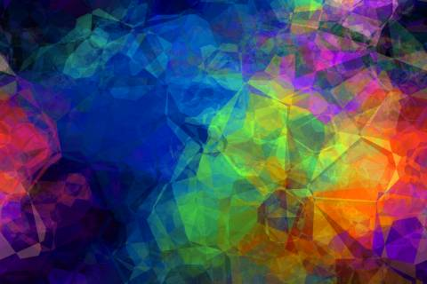

Övning 6.1 - float
Skapa en webbsida där texten wrappar runt en bild som ligger antingen på höger eller vänster sida i en container (div). Den ska ligga på GitHub. 2 Lägg till en ny sektion på webbsidan, som har en tabell. Tabellen ska inte skapas med table-elementet utan med display: table.
3 Lägg till en ny sektion på webbsidan, som efterliknar den vänstra bilden på slide #8. Använd flex.
Övning 6.2 - CSS tabell
cell 1
cell 2
cell 3
cell 4